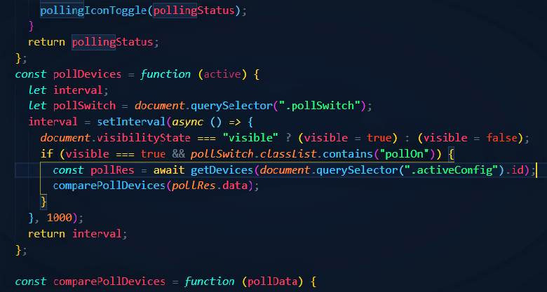

Features
Home - Kitchen
Home - Lounge
Steve's Network
Multiple connections
Allows connections to any number of Maker API instances setup on any hub with an internet connection. Use this to segment areas of your network or control multiple networks from a remote location.

Polling
Make poll requests to your hub to update device status automatically. The polling system is performant and toggleable, and is subject to validation checks before repeating the check.
Instant response
The UI responds instantly to controlling devices and is followed by a validation check, ensuring the device's shown status is correct. Enjoy a snappy and reliable UI.